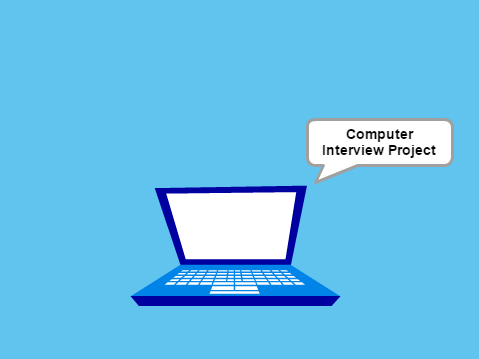

Name Assignment
Description:
Use scratch to design and create a program that shows my name. I added click green flag to stop for extra credit. The program starts when you press space. I used forever loop to make the letters move forever.
Concepts Learned:
- Using events block - when green flag clicked
- Loops - forever loops to make sprites change color and turn/move forever
- Sprites - name sprites found in scratch sprite library
Computer Buying Project

Description:
I made a presentation/play on scratch. I clicked green flag to start, pressed space to switch to next scene, and pressed right arrow to the next scene. I also used a lot of broadcast blocks for the character conversations.
Concepts Learned:
- Broadcast block - when a sprite receives a message, it will say something
- Conditional statements - press keys to change scenes
- Sprites - changed size of sprite when clicked
- Events block - hide sprites when background changes
Final Project

Description:
I made a Final Fantasy game on scratch. I used a lot of broadcast blocks. and conditional statements. The sprites were found on the Final Fantasy wiki page. I added a help page to show how to play the game.
Concepts Learned:
- Broadcast block - when a character receives this, they will do this
- Conditional statements - with operators. If life goes down to a certain number, then character will broadcast something.
- Sprites - change costume when attacking or health up.